CCDC · Quản lý tài sản · Kiểm kê V5
Làm một lần, đã có người phụ trách. Chưa xong thì chưa mở được đợt đầu.
| Việc | Số liệu thật (dump Online 16/11) | Ai làm |
|---|---|---|
| 1. Làm sạch dữ liệu không còn đồ đứng tên người đã nghỉ | 140 món đứng tên 16 người đã nghỉ, 7 món của 3 người tạm nghỉ. File rà soát gửi riêng (có mã nhân viên). | Hành chính, lập phiếu điều chuyển |
| 2. Tích Chung / Riêng | 3.557 món phải có giá trị (VN01 2.578, VN02 979). Gợi ý: 794 món đang ở người mà không có phòng có thể là đồ riêng (VN01 697 món / 53 người, VN02 97 món / 50 người). Chỉ là gợi ý, hành chính quyết. | Hành chính trên danh sách CCDC |
| 3. Tạo bảng vùng mới vùng nào cũng có công ty, kho là vùng | Bảng hiện có 80 vùng: VN01 37, VN02 25, 18 vùng chưa có công ty (đồ trong đó đều của VN01). Mỗi công ty có 1 kho. | Hành chính |
| 4. Nhân viên chuyên môn của nhóm CCDC | Online 21/11 đã đủ: phân công ở 3 nhóm gốc (Thiết bị VP, Phương tiện vận tải, Trang thiết bị CNTT), mọi nhóm con leo lên nhóm gốc để tìm người. VN02 chưa có người riêng cho nhóm Phương tiện vận tải (NTS-02, 37 món): theo luật hiện tại phiếu vùng của các món này sang người VN01 phụ trách nhóm đó. Muốn VN02 tự xác nhận thì thêm một dòng phân công. ✔ chốt 2 | Quản trị danh mục nhóm |
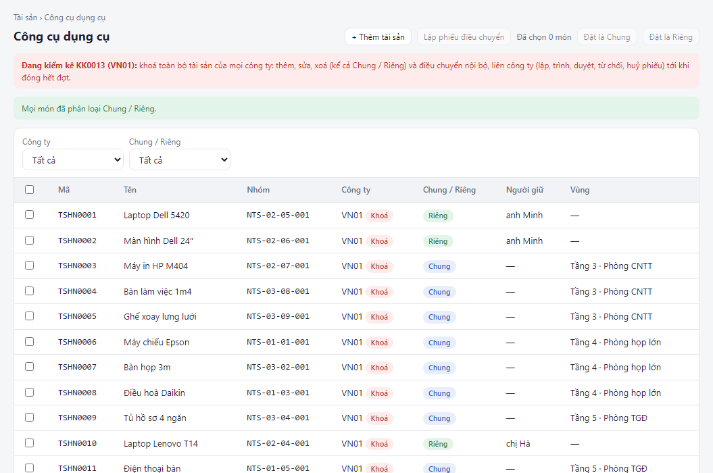
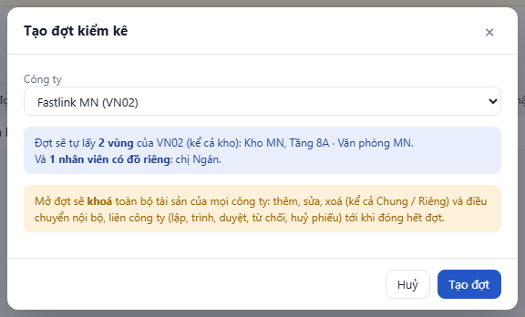
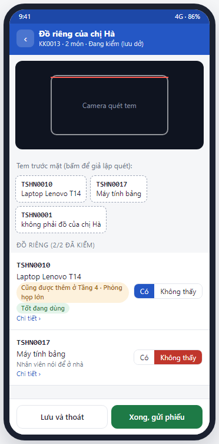
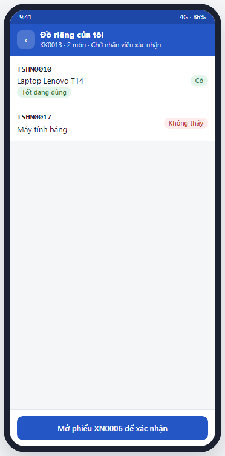
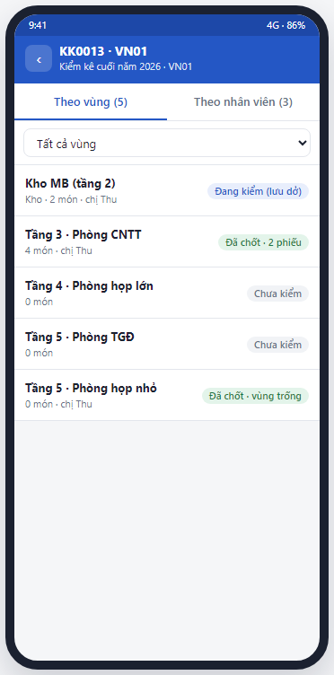
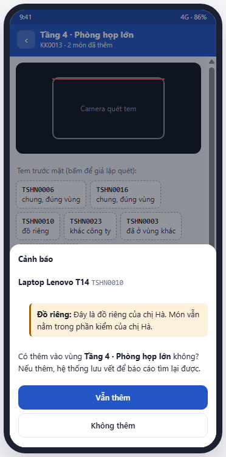
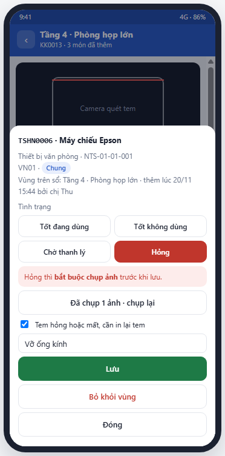
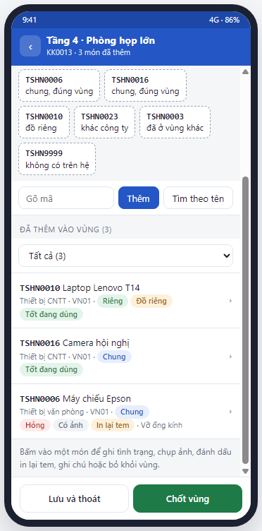
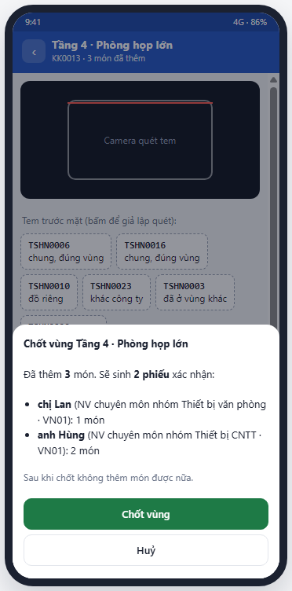
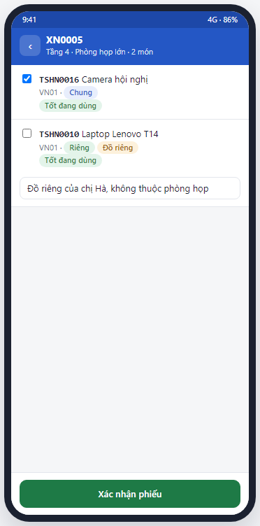
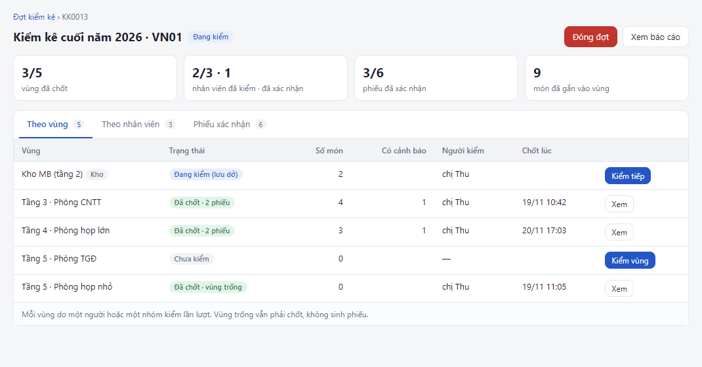
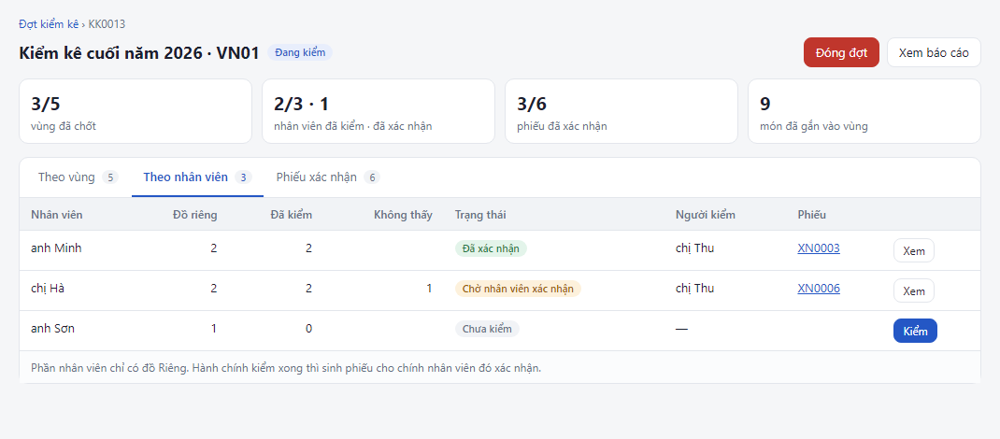
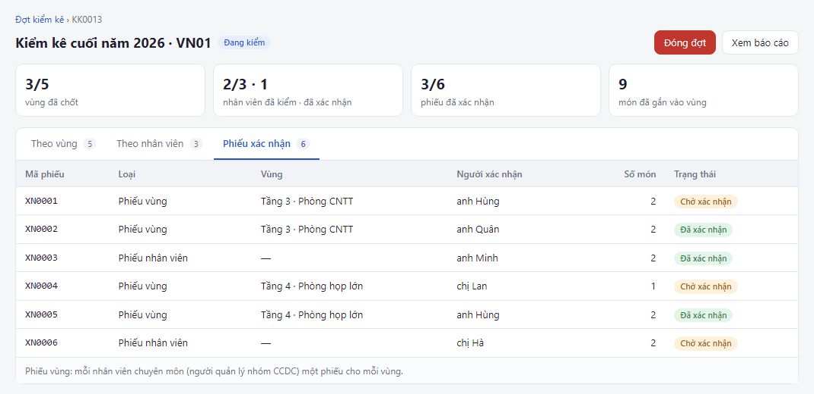
| Trường hợp | Câu hỏi hiện ra | Nếu vẫn thêm |
|---|---|---|
| Món là đồ riêng | "Đây là đồ riêng của [tên nhân viên]. Có thêm vào vùng này không?" | Món vẫn nằm trong phần kiểm của nhân viên đó, đồng thời có mặt ở vùng. Vào phiếu của nhân viên chuyên môn. |
| Món thuộc công ty khác | "Món này thuộc công ty [mã]. Có thêm vào vùng này không?" | Lưu vết. Phiếu cho nhân viên chuyên môn nhóm món đó ✔ chốt 3. |
| Món đã được thêm ở vùng khác trong cùng đợt | "Món này đang được kiểm ở vùng [tên vùng]. Có thêm vào đây không?" | Lưu vết, món nằm ở hai phiếu. Gần như không xảy ra vì mỗi vùng chỉ một người kiểm. Sau đợt món gắn với vùng chốt sau cùng. |
| Ghi gì | Áp cho | Luật |
|---|---|---|
| Tình trạng | Món ở vùng; đồ riêng được ghi Có | Tốt đang dùng (mặc định khi quét), Tốt không dùng, Chờ thanh lý, Hỏng. |
| Ảnh | Món ghi Hỏng | Bắt buộc chụp ít nhất 1 ảnh mới lưu được. |
| In lại tem | Mọi món đã thấy | Tích khi tem hỏng hoặc mất, để hành chính in lại. |
| Không thấy | Đồ riêng | Ghi chú lý do (ví dụ nhân viên nói để ở nhà). Món ở vùng không có "Không thấy": không thấy thì không thêm. |
| Ghi chú | Mọi món | Tuỳ chọn. |
Có ghi tình trạng, chỉ nằm trên báo cáo kiểm kê, không sửa hồ sơ tài sản ✔ chốt 6. Mã không có trên hệ thì không thêm được, hiện "Không tìm thấy mã". Lưu vết gồm: mã món, vùng, người thêm, thời điểm, loại cảnh báo, nội dung cảnh báo lúc đó (tên nhân viên, công ty, vùng kia).
| Loại phiếu | Sinh khi nào | Gửi cho ai | Gồm những món nào |
|---|---|---|---|
| Phiếu nhân viên | Người đi kiểm bấm "Xong, gửi phiếu" cho phần của nhân viên | Chính nhân viên đó | Đồ riêng của nhân viên trong công ty của đợt |
| Phiếu vùng | Người kiểm chốt vùng | Nhân viên chuyên môn của nhóm CCDC ✔ chốt 2 | Các món đã thêm vào vùng, thuộc nhóm người đó phụ trách (tính theo cây nhóm). Chỉ có nút Xác nhận. |
| Vùng trống | Người kiểm chốt vùng không có món | Không sinh phiếu | Chỉ ghi vùng đã chốt, ai chốt, lúc nào |
Ước số phiếu vùng mỗi đợt nếu đồ vẫn ở vùng như hiện nay: VN01 khoảng 81 phiếu cho 55 vùng có đồ, VN02 khoảng 44 phiếu cho 25 vùng (1–3 phiếu mỗi vùng). Đếm theo nhân viên chuyên môn, kể cả nhóm chưa có người.
| Màn | Trả lời câu hỏi gì |
|---|---|
| Công cụ dụng cụ: thêm cột và bộ lọc Chung / Riêng, tích hàng loạt | Món nào chưa phân loại. Chưa đủ thì không mở được đợt. |
| Đợt kiểm kê: danh sách, tạo đợt, chi tiết đợt (tab Theo vùng, Theo nhân viên) | Vùng nào chưa kiểm / đang kiểm / đã chốt; nhân viên nào chưa xác nhận; phiếu nào chưa duyệt. |
| Báo cáo kiểm kê: chọn nhiều công ty, nhiều đợt | Bấm vào vùng / nhân viên / phiếu để xem chi tiết từng món. |
| Báo cáo "Món thêm có cảnh báo" | Lọc theo loại: đồ riêng, khác công ty, ở hai vùng. Có người thêm và thời điểm. |
| Báo cáo "Món chung chưa gắn vùng" | Món Chung mà hết đợt không ai thêm vào vùng nào. Đây là chỗ duy nhất phát hiện đồ thất lạc, vì kiểm vùng không so với sổ. |
| Báo cáo "Tình trạng ghi nhận" | Món hỏng (có ảnh), không thấy, cần in lại tem, tốt không dùng, chờ thanh lý; kiểm ở đâu, ai kiểm, ghi chú. |
| Phiếu duyệt của tôi | Phiếu đang chờ mình xác nhận (nhân viên chuyên môn, nhân viên có đồ riêng). |
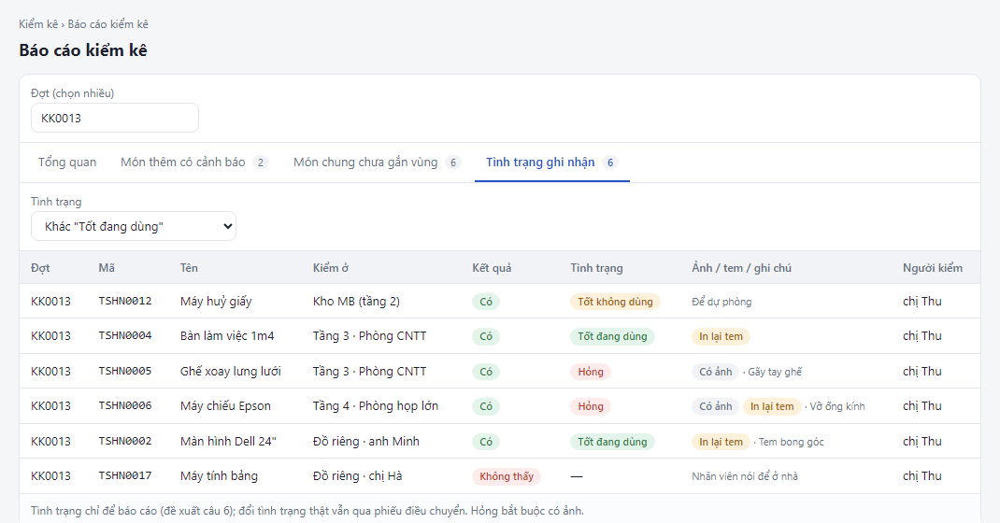
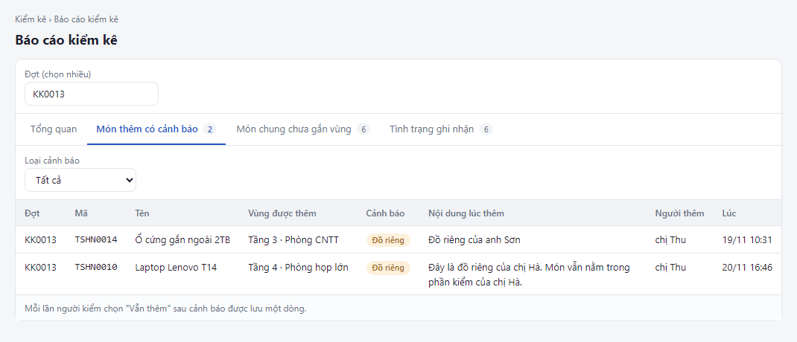
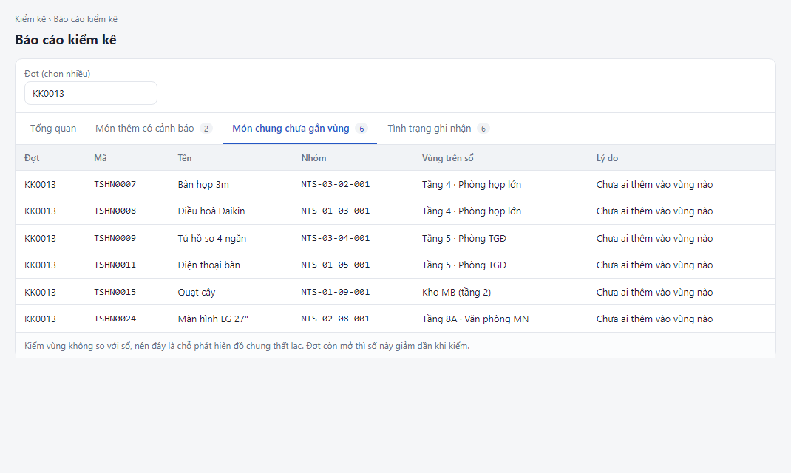
Nguồn: script nạp dữ liệu CCDC V5 production (16/11/2026), bảng vùng org_station_zone (17/11). Chỉ tính món đang theo dõi (bỏ mất, đã thanh lý, không theo dõi).
| Chỉ số | Số | Ghi chú |
|---|---|---|
| Món VN01 ở 18 vùng chưa có công ty | 380 | Gán 18 vùng cho VN01 lúc tạo bảng vùng mới là hết. |
| Món VN01 ở vùng của VN02 | 198 | Hiện cảnh báo "khác công ty" khi kiểm vùng VN02; phiếu cho nhân viên chuyên môn nhóm món đó. ✔ chốt 3 |
| Món VN02 ở vùng của VN01 | 15 | Như trên, chiều ngược lại. |
| Dòng nhân viên chuyên môn còn hiệu lực (Online 21/11) | 5 | VN01: 3 nhóm gốc. VN02: Thiết bị VP, Trang thiết bị CNTT. |
| Món VN02 nhóm Phương tiện vận tải | 37 | Chưa có người VN02; phiếu sang người VN01 phụ trách nhóm (luật ưu tiên cùng công ty, không có thì lấy công ty khác). |
| Cột "người quản lý" trên từng tài sản | 3 người | Không dùng cho kiểm kê. Có giá trị ở cả 3.557 món, chỉ 90 món trùng nhân viên chuyên môn. ✔ chốt 2 |
| Đồ đứng tên người đã nghỉ / tạm nghỉ | 140 / 7 | Phải làm sạch trước đợt đầu. |
Anh Đạt đã duyệt luồng và chốt điểm 1–6; điểm 7–14 chốt cùng chủ dự án (20/11/2026). Màn minh hoạ làm đúng theo các điểm này.
| # | Điểm | Đã chốt |
|---|---|---|
| 1 | Kiểm kê có sửa hồ sơ tài sản không? | Không. Xác nhận phiếu không tự cập nhật bảng tài sản. Vùng gắn lúc kiểm, tình trạng, ảnh, tem chỉ nằm trên báo cáo kiểm kê. Đổi vùng, người giữ, tình trạng thật vẫn qua phiếu điều chuyển. |
| 2 | Phiếu vùng gửi cho ai? | Nhân viên chuyên môn của nhóm CCDC, chính là người quản lý nhóm (bảng dùng cho bước Chuyên môn của phiếu điều chuyển, leo cây nhóm tới nhóm gần nhất có người). Không dùng cột "người quản lý" trên từng tài sản. Online đã đủ phân công ở nhóm gốc. VN02 chưa có người riêng cho nhóm Phương tiện vận tải (NTS-02, 37 món): theo luật hiện tại phiếu vùng của các món này sang người VN01 phụ trách nhóm đó. Muốn VN02 tự xác nhận thì thêm một dòng phân công. |
| 3 | Món của công ty khác được thêm vào vùng | Vẫn gửi nhân viên chuyên môn của nhóm món đó. Cảnh báo và lưu vết như mục 04. |
| 4 | Nhân viên chuyên môn không đồng ý một món? | Không có trường hợp này. Phiếu vùng và phiếu đồ riêng đều chỉ có nút Xác nhận. |
| 5 | Đóng đợt khi chưa xong | Hành chính bấm đóng: nếu còn vùng chưa chốt, nhân viên chưa xác nhận hoặc phiếu chưa xác nhận thì hiện cảnh báo kèm số còn dở. Hành chính đồng ý thì đóng; các mục dở giữ nguyên trên báo cáo. |
| 6 | Có ghi tình trạng không? | Có. Tốt đang dùng, Tốt không dùng, Chờ thanh lý, Hỏng (bắt buộc ảnh); in lại tem; ghi chú. Chỉ nằm trên báo cáo kiểm kê. |
| 7 | Ai kiểm phần nhân viên? | Hành chính đi kiểm từng người. Nhân viên chỉ xác nhận phiếu. |
| 8 | Nhân viên có sửa được gì không? | Không. Nhân viên không vào màn tài sản để sửa; phiếu đồ riêng chỉ có nút Xác nhận. |
| 9 | Ai quyết Chung / Riêng, đổi khi điều chuyển thế nào? | Hành chính quyết trên màn tài sản. Kiểm kê chỉ đọc cột này, không cập nhật gì vào dữ liệu tài sản; báo cáo kiểm kê là căn cứ để hành chính xử lý tiếp. |
| 10 | Mấy đợt cùng lúc? | Trong khoảng thời gian kiểm kê, mỗi công ty chỉ có 1 đợt đang mở. |
| 11 | Ai được đi kiểm? | Có resource quyền riêng cho người đi kiểm kê, chủ dự án cấp. |
| 12 | App mobile ai làm? | Bên mobile làm app. V5 làm web và cung cấp đủ API cho app (danh sách API gửi đội code). |
| 13 | Bảng vùng mới đặt ở đâu? | Bảng mới trong fl_asset_v5, vùng nào cũng có công ty. Không sửa bảng vùng dùng chung. |
| 14 | Trong lúc kiểm kê có sửa tài sản, điều chuyển được không? | Không. Chỉ cần có một đợt đang mở là khoá toàn bộ tài sản của mọi công ty: thêm, sửa, xoá (kể cả Chung / Riêng) và điều chuyển nội bộ, liên công ty (lập, trình, duyệt, từ chối, huỷ phiếu), không xét công ty. Đóng hết các đợt thì mở khoá. Danh mục, nhóm, vùng không khoá. |